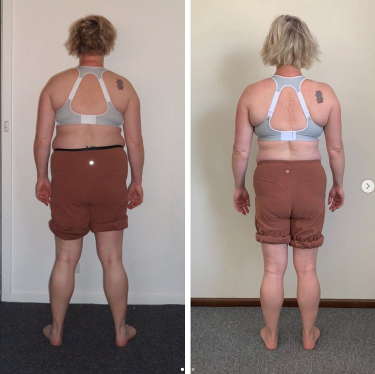

Search “how to remove a hunchback” and you’ll see the same recommendations everywhere:
Stretch your chest.
Strengthen your back.
Do posture exercises.
Try yoga for hunchback posture.
Yet many people follow this advice for months and still notice the same thing in the mirror:
A bulge at the top of the spine.
A neck hump forming at the base of the neck.
Rounded shoulders and a hunched upper back posture.
The reason this happens is simple.
A hunchback posture — often called a dowager’s hump — is rarely caused by one weak muscle or one tight muscle.
It’s usually the result of how the body organises itself during movement, especially during walking and standing.
At Functional Patterns Brisbane, we look at posture through the lens of biomechanics and gait mechanics. Instead of chasing endless hunchback exercises, we focus on correcting the patterns that shape posture in the first place.
Before talking about how to remove a hunchback, it’s important to understand what it actually is.
Understanding Hunchback Posture

What is a Hunchback?
A hunchback posture describes excessive rounding through the upper back, often accompanied by a bulge at the base of the neck.
This condition is commonly referred to as:
-
dowager’s hump
-
neck hump
-
hump on the back of the neck
-
hunched back posture
In many cases, the hump forms where the neck meets the upper back.
This area experiences significant mechanical stress when the body’s posture and movement patterns become inefficient.
Over time, connective tissue and muscular tension can accumulate in this region, creating the visible neck hump many people notice.
Causes of Hunchback
Several factors contribute to the development of hunchback posture.
Common causes include:
-
prolonged sitting
-
excessive screen use
-
inefficient walking mechanics
-
poor breathing mechanics
-
training programs that ignore posture and gait
While these factors are often blamed individually, the deeper issue is how the body coordinates movement under gravity.
When the body loses the ability to distribute forces efficiently, the spine begins to adapt.
This is often what produces the humpback neck appearance.
Hunchback from Bad Posture
Many people develop a hunchback from bad posture, especially when the shoulders round forward and the head shifts in front of the body.
This forward head position places extra load on the upper spine.
Over time, the body compensates by thickening connective tissue in the area, which can appear as a bulge at the top of the spine.
Trying to fix this with simple back strengthening exercises rarely solves the problem long term because the body continues repeating the same movement patterns each day.

RecogniSing the Signs of a Neck Hump
Physical Indicators of Hunchback Posture
Common signs of a developing neck hump include:
-
a visible bump at the base of the neck
-
rounded shoulders
-
forward head posture
-
upper back tightness
-
reduced mobility through the thoracic spine
Some people also experience tension headaches, neck discomfort, or shoulder fatigue due to the mechanical strain created by this posture.
Emotional and Psychological Effects
Posture affects more than just physical appearance.
People with hunched posture often report feeling:
-
less confident
-
physically restricted
-
self-conscious about their posture
Because posture influences how the body moves and breathes, it can also affect energy levels and overall movement efficiency.
Improving posture can therefore have benefits that extend well beyond aesthetics.

How to Get Rid of a Hunchback
Many articles recommend dowager’s hump exercises, yoga, or simple stretches.
While mobility and strength work can play a role, they often fail to address the deeper cause of the problem.
The key to neck hump correction is restoring how the body distributes force during movement.
Instead of focusing only on the hump itself, the goal is to improve:
-
balance and weight distribution
-
rotational movement through the torso
-
coordination between the ribcage and pelvis
-
gait mechanics
When these qualities improve, the posture that created the hump often begins to reorganise.
Why Most Hunchback Exercises Don’t Work
Most hunchback workouts focus on strengthening the upper back.
But muscles don’t become dysfunctional randomly.
They adapt to the movement patterns you repeat every day.
If those patterns remain unchanged, the body will continue reinforcing the same posture — regardless of how many back exercises for hunchback posture you perform.
This is why many people experience:
-
temporary improvement
-
posture returning after a few hours
-
persistent tension in the same areas
Posture is not just a strength issue.
It’s a coordination issue across the entire body.
The Role of Movement in Neck Hump Correction
The most powerful factor shaping posture is not a five-minute exercise routine.
It’s how you move throughout the day.
Humans take thousands of steps daily.
If each step reinforces inefficient mechanics, posture gradually deteriorates.
If each step reinforces efficient mechanics, posture gradually improves.
This is why improving walking mechanics often plays a major role in fixing a hunched back.

Ergonomic Adjustments at Work
Work environments can contribute to hunchback posture, especially when people spend long hours sitting.
Helpful adjustments include:
-
positioning screens at eye level
-
avoiding prolonged static sitting
-
incorporating regular movement breaks
-
maintaining balanced seating posture
However, ergonomic adjustments alone rarely solve posture issues completely.
They are most effective when combined with movement retraining.
When to Seek Professional Help
If a neck hump or hunched back posture continues to worsen, professional guidance may be helpful.
Practitioners who specialise in posture and movement mechanics can assess:
-
gait patterns
-
spinal alignment
-
muscular coordination
-
movement efficiency
Understanding how the body distributes forces during movement can provide valuable insight into why posture changes have developed.

Improving Spinal Health Long Term
Improving spinal health and posture is rarely about finding a single perfect exercise.
It’s about restoring how the body organises itself under gravity.
This often involves improving:
-
movement coordination
-
breathing mechanics
-
rotational mobility
-
balance and gait
When these qualities improve, posture tends to follow.
Posture Training at Functional Patterns Brisbane
At Functional Patterns Brisbane, we help people address the underlying movement patterns that contribute to poor posture, neck humps, and spinal tension.
Rather than relying on generic hunchback exercises, we assess how the body moves during walking, standing, and basic movement patterns.
From there, we guide people through training that helps restore more efficient biomechanics.
If you’re trying to remove a hunchback or fix a neck hump, addressing the patterns shaping your posture is often the most effective place to start.
Improving posture isn’t about forcing the body into position.
It’s about teaching the body how to move better over time.